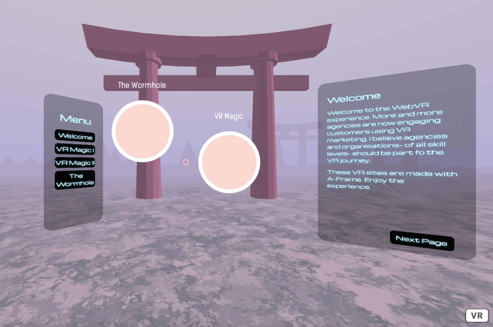

Technologies
The visual novel is created using Ren’Py, an open-source visual novel engine, and coded using Python.
Write a brief overview of the project, including the problem that needed to be solved and the project goals.
Write about your role in the project, including your responsibilities and contributions.
Write about the interviews conducted during the project, including the participants and the insights gained.
Followed HCD process throughout 6 months
We followed the User Centered Design process to investigate how Uber riders may want to recreate Uber experiences based on their preferences. Letting user research be our guide, we brainstormed and designed multiple solutions. We then tested our ideas via usability tests and developed a high-fidelity interactive prototype based on our findings.
To start with the research, we analyzed 4 direct competitors in the ride-sharing industry (Lyft, Wingz, Didi, Uzurv) and 1 mobile app that serves two-sided market (Wag!).
We learned that:
The visual novel is created using Ren’Py, an open-source visual novel engine, and coded using Python.